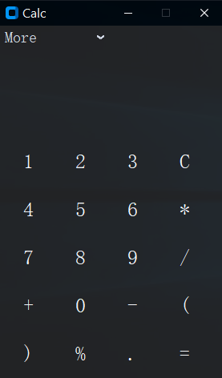
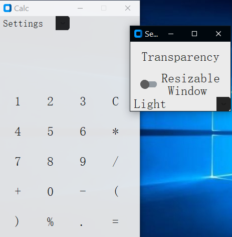
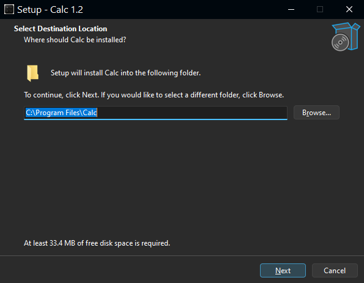
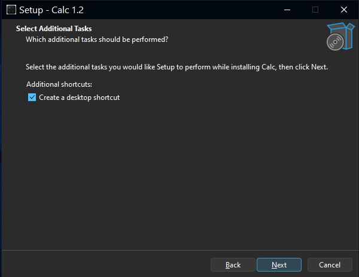
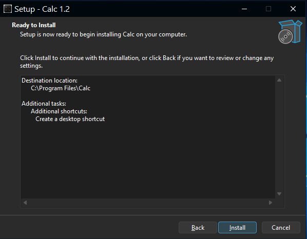
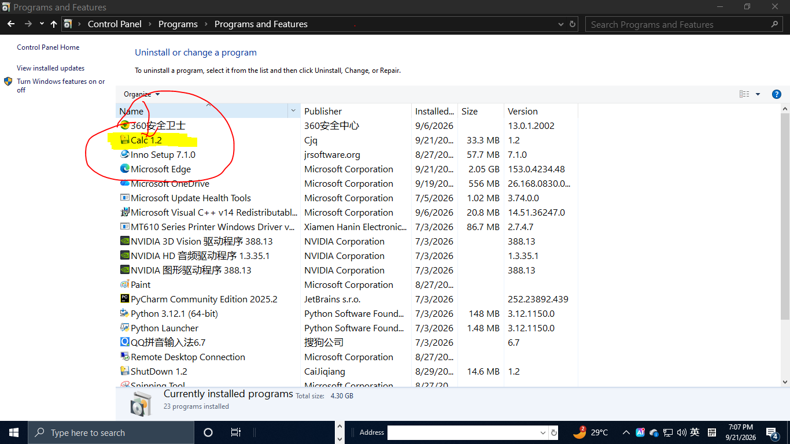
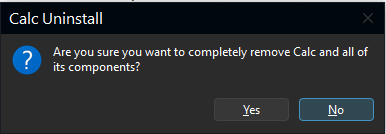
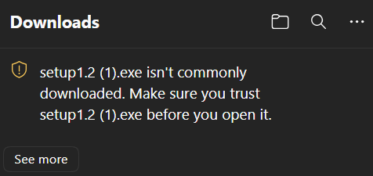

欢迎下载我的计算器软件！
您可以放心下载，它是安全且无病毒的。
它的界面非常简洁，没有广告，是非常基础的计算器。
偶尔算点普通的计算题，用它很方便。
他的个性化设置很友好，您可以让窗口透明，切换深浅色主题，还能够控制计算器能否能最大化。


它适用于Windows电脑，您需要确保您的电脑是Windows系统。
您需要明白，您在此网页下载的是安装程序。




您只需要打开系统控制面板，找到此软件并右键卸载，确认即可。

您需要注意，在运行时会提示未知来源，您确认即可，他是安全的！
作为本人小成品，难免没有数字签名，请谅解！您可能会看到如上的结果。